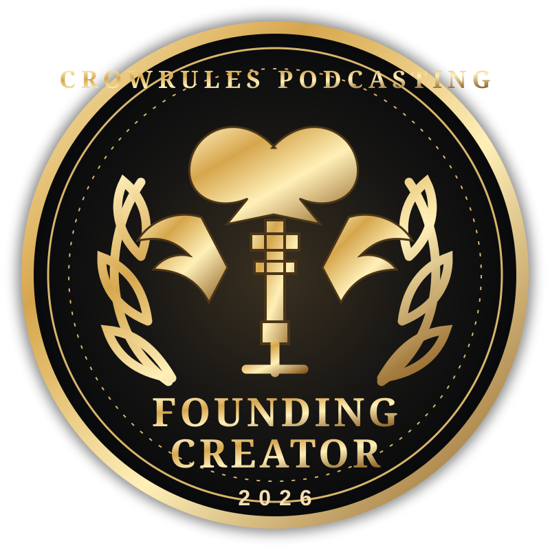

Path 01 · November
Thanksgiving Gratitude Challenge
Submit a qualifying Thanksgiving challenge contribution during the published event window. Once approved, you qualify for Founding Creator 2026.
You were here at the beginning. The creators who take part in the 2026 holiday pilot challenges help establish the first chapter of CrowRules Podcasting Challenges.

Founding Creator is a participation recognition, not a competition prize. It is separate from monthly Participant and Champion awards and does not depend on winning, popularity, audience size, or vote totals.
Participate in either holiday pilot, or both. Both paths begin with an approved entry.
Submit a qualifying Thanksgiving challenge contribution during the published event window. Once approved, you qualify for Founding Creator 2026.
Submit a qualifying Christmas challenge contribution during the published event window. Once approved, you qualify for Founding Creator 2026.
Creators with approved qualifying entries in both Thanksgiving and Christmas receive the standard Founding Creator recognition plus a separate Double Event distinction.
Once verified and awarded, the historical badge does not expire when the pilot events end. It is separate from monthly Participant and Champion awards.
The permanent Founding Creator badge is attached to the creator profile and can be displayed as part of the creator’s recognition history.
Creators retain ownership of their content. Public display requires permission and moderation.
The 2026 pilot events now use a dedicated Supabase challenge-entry record and administrator review queue. When an administrator approves a qualifying Thanksgiving or Christmas entry, the database automatically awards the permanent Founding Creator 2026 badge to the creator profile. Approval of both events also awards the separate Double Event distinction. Public directory and showcase display remain subject to the creator’s permission.